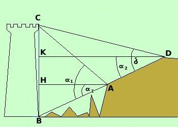

|
 I due triangoli BAH e BDK sono simili perche' AH e DK sono due orizzontali e quindi fra loro parallele, e sono tagliate dalle trasversali BK e BD quindi gli angoli corrispondenti sono uguali angolo BAH = angolo BDK angolo BHA = angolo BKD = 90° I due triangoli avendo due angoli congruenti sono simili |